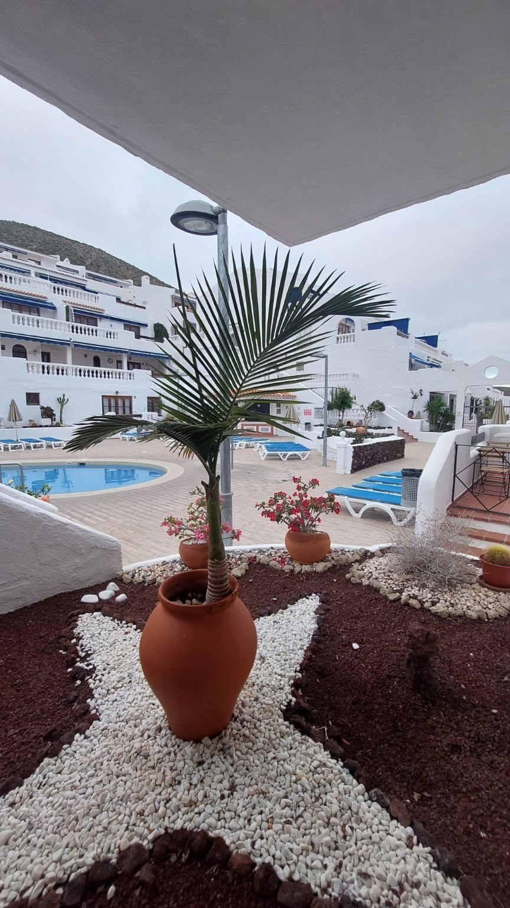
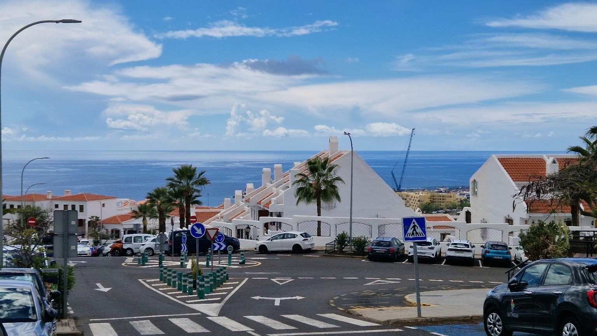
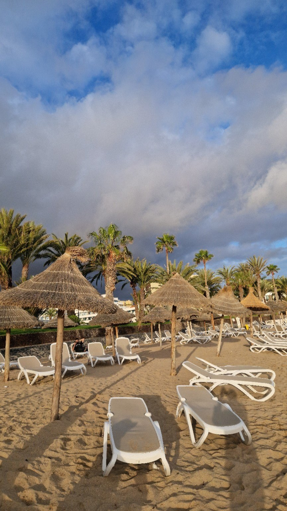
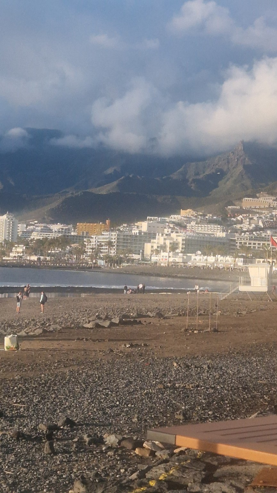
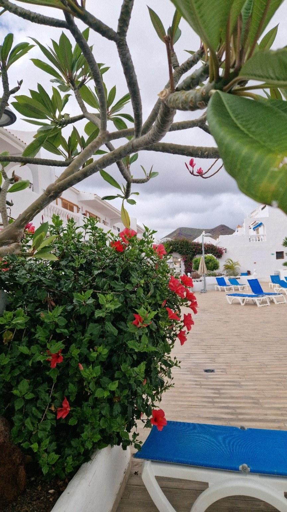

Dimineața devreme, Los Cristianos nu seamănă încă cu stațiunea pe care o cunoaște toată lumea. Terasele sunt aproape goale, șezlongurile nu au fost ocupate, iar străzile păstrează liniștea nopții. Pentru puțin timp, orașul pare să existe numai pentru cei care s-au trezit devreme.
La Port Royale, dimineața începe fără grabă. Piscina este nemișcată, clădirile albe capătă treptat contur, iar aerul are răcoarea aceea scurtă care dispare repede în sudul insulei. Nu se aud conversații și nici zgomotul obișnuit al unei zile de vacanță. Doar câteva uși, câteva păsări și vântul slab printre frunze.

Îmi place această oră fiindcă nu cere un plan. Nu trebuie să alegi un obiectiv și nici să te grăbești spre ceva. Deschizi ușa, privești complexul încă adormit și pornești la drum. Uneori, Tenerife se înțelege mai bine așa: nu prin marile atracții, ci prin câteva minute în care lumina cade peste un zid alb și nimeni nu vorbește.
Coborârea spre Los Cristianos
De la Port Royale, drumul coboară spre ocean. În timpul zilei, panta este doar un detaliu practic. Dimineața devine parte din poveste. Mergi mai încet, iar marea apare printre clădiri, dispare după o curbă și revine câteva zeci de metri mai jos.

La începutul dimineții, străzile nu sunt complet goale, dar sunt încă ale orașului. Oamenii pe care îi vezi merg la muncă, plimbă un câine sau deschid un magazin. Se ridică un oblon, se aliniază câteva scaune, o dubă oprește pentru o livrare. Sunt gesturi obișnuite, aproape invizibile după ce ziua începe cu adevărat.
Los Cristianos nu trăiește numai din vacanțe. Dimineața o arată cel mai clar. Înainte de plaje și excursii, există un oraș care se pregătește pentru cei care vor veni mai târziu.
Plaja înainte de aglomerație
Când ajung aproape de apă, lumina este încă blândă. Șezlongurile sunt așezate, umbrelele sunt ridicate, dar cele mai multe locuri sunt libere. Dimineața devreme, plaja este aproape goală. Șezlongurile sunt pregătite, umbrelele sunt ridicate, dar oamenii încă nu au venit, iar Atlanticul rămâne neatins și rece în lumina blândă a începutului de zi.

Acesta este momentul pe care fotografia îl spune cel mai bine. Nu o plajă complet goală și nici o imagine idealizată, ci începutul unei zile reale. Cineva a ajuns deja, altcineva își caută locul, iar restul orașului este încă pe drum.
Atlanticul se aude mai clar atunci când sunt puține voci. Valurile nu sunt neapărat puternice, dar au un ritm constant care acoperă restul zgomotelor. Pentru câteva minute, nu simți nevoia să faci nimic. Mergi, te oprești și privești.
Între ocean și munte
Los Cristianos este prins între două prezențe mari: Atlanticul și relieful sudului insulei. Din apropierea plajei, muntele pare uneori foarte aproape, mai ales când norii îl acoperă pe jumătate și lumina se schimbă de la un minut la altul.

Orașul nu este un decor perfect și nici nu trebuie prezentat astfel. Are trafic, clădiri apropiate, străzi abrupte și ore în care liniștea dispare aproape complet. Dar tocmai această combinație îl face recognoscibil. Este un loc locuit, nu o fotografie fără urme.
Cu timpul, apropierea de un loc se construiește din lucruri mici: un colț de stradă pe care îl recunoști, drumul pe care nu mai trebuie să îl verifici pe hartă, felul în care lumina cade într-o anumită dimineață. Un loc începe să devină al tău atunci când nu îl mai privești numai ca pe o destinație.
Când orașul începe să se schimbe
Pe măsură ce dimineața înaintează, schimbarea devine vizibilă. Apar mai multe mașini, se aud mai multe voci, iar terasele încep să se umple. Pe plajă, spațiile goale devin mai puține. Soarele urcă și culorile capătă intensitatea cunoscută a sudului insulei.
Nu este un moment trist. Fără oameni, Los Cristianos nu ar mai fi Los Cristianos. Energia lui vine din amestecul de limbi, vârste și motive pentru care fiecare a ajuns aici. Însă, după ce ai văzut dimineața, privești altfel restul zilei. Știi că sub agitație există o versiune mai calmă, care va reveni a doua zi.
De ce merită să pleci devreme
Nu ai nevoie de un traseu complicat. Vara, o plecare dimineața devreme îți oferă temperatură mai plăcută, lumină mai blândă și suficientă liniște pentru a observa orașul. Poți coborî spre plajă, merge de-a lungul promenadei și te poți întoarce înainte ca soarele să devină puternic.
Nota jurnalului
Ia încălțăminte comodă și puțină apă. Coborârea este ușoară, însă întoarcerea spre Port Royale este în pantă. Cel mai important este să nu transformi plimbarea într-o cursă. Dimineața aceasta merită tocmai pentru că nu trebuie să bifezi nimic.
Valoarea ei nu stă în numărul locurilor văzute. Stă în ritm. În faptul că, pentru o vreme, nu trebuie să ajungi nicăieri și nu trebuie să demonstrezi că ai profitat de zi. Într-o destinație unde fiecare oră poate fi umplută cu excursii și planuri, o plimbare fără obiectiv devine una dintre cele mai sincere experiențe.
Întoarcerea la Port Royale
Drumul înapoi este acum în urcare. Oceanul rămâne în urmă și reapare de fiecare dată când mă opresc. Străzile pe care le-am coborât în liniște sunt deja mai animate, iar ziua pare să fi început complet.

Când ajung, complexul începe și el să se trezească. Se deschid uși, apar primele voci, iar piscina nu mai pare suspendată în afara timpului. Totul intră treptat în ritmul obișnuit.
Dar dimineața nu dispare complet. Rămâne în felul în care privesc locul pentru restul zilei. Rămâne în lumina de pe plajă, în străzile coborâte fără grabă și în liniștea pe care știu că o voi regăsi.
Poate că acesta este motivul pentru care revin la aceeași plimbare. Nu pentru că traseul se schimbă, ci pentru că îl observ de fiecare dată altfel. Unele locuri se descoperă prin distanțe mari. Altele, prin repetarea atentă a câtorva pași.
Los Cristianos, înainte ca orașul să se trezească, aparține celei de-a doua categorii.
Travel slower. Discover deeper.